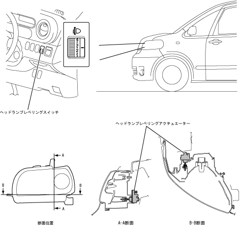

| 手動レベリング機能 |
| ● |
車室内のヘッドランプレベリングスイッチ（レベル0で最上方向，レベル5で最下方向）の状態信号により，ヘッドランプレベリングアクチュエーターを駆動し，リフレクターの向きを上下方向に動かして光軸を調整します。なお，光軸調整はヘッドランプレベリングスイッチ“0”で行ってください。
|
| ● |
ヘッドランプレベリングスイッチはインストルメントロワーパネル内ステアリングコラム右側に，ヘッドランプレベリングアクチュエーターはヘッドランプ裏面にそれぞれ取り付けました。
|
|  |